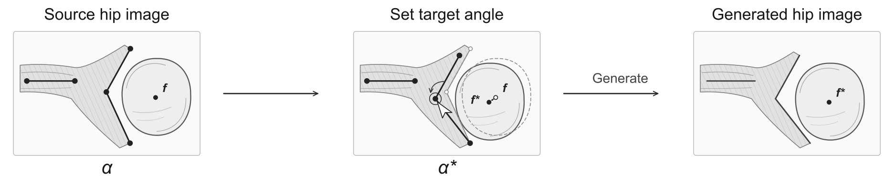

Interactive demo
Abstract
Editing infant hip ultrasound images across the bony roof angle ranges used in the Graf system could provide controlled examples for teaching angle measurement and evaluating measurement algorithms. The technical challenge is to convert an angle request into visible image changes while retaining the surrounding tissue appearance. We introduce a local editing method that separates analytical landmark control from image synthesis. An angle solver converts the requested bony roof angle α and cartilage roof angle β into target landmarks while preserving the baseline and roof segment lengths. Distance-based landmark and line-segment maps encode the target geometry for a conditional generator, which also receives the source crop and a pixelwise edit mask. The predicted content is blended locally with the source image. An optional step translates source femoral head texture into the generated region, with reduced texture blending near the requested lines. To assess the contribution of the landmark and line maps, we compared generators trained with and without them on the same previously analyzed ultrasound images. A UNet++ line detector measured the angles in the edited images. The generator trained with these maps produced angles closer to the requested values than the generator trained without them. The method provides a basis for developing infant hip ultrasound image sets with controlled bony roof and cartilage roof angle variations for teaching and evaluating angle-measurement methods.
Method

Citation
@misc{chen_hip_ultrasound_editing,
author = {Chen, Yueh-Peng and Fan, Tzuo-Yau and Kao, Hsuan-Kai},
title = {Geometry-Controlled Editing of Infant Hip Ultrasound},
howpublished = {Research demonstration},
url = {https://yuehpengchen.github.io/hip-ultrasound-editing/}
}